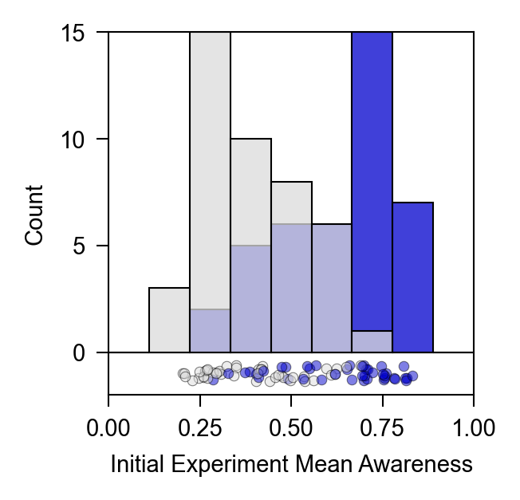
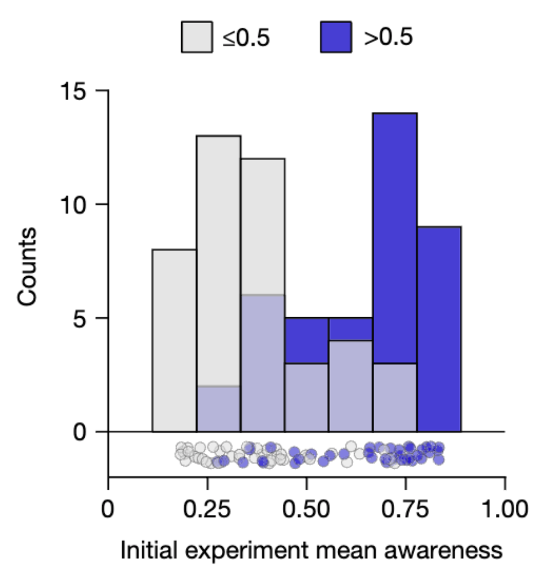
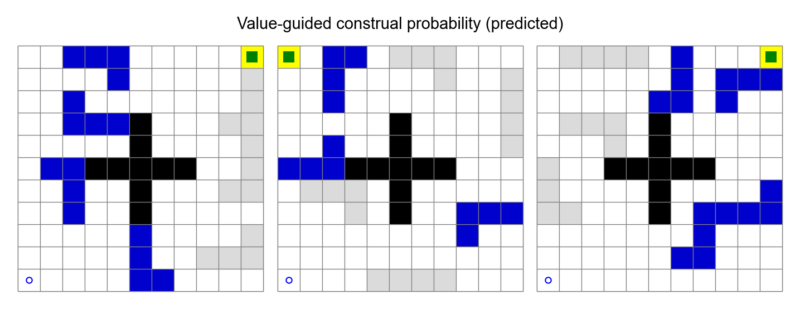
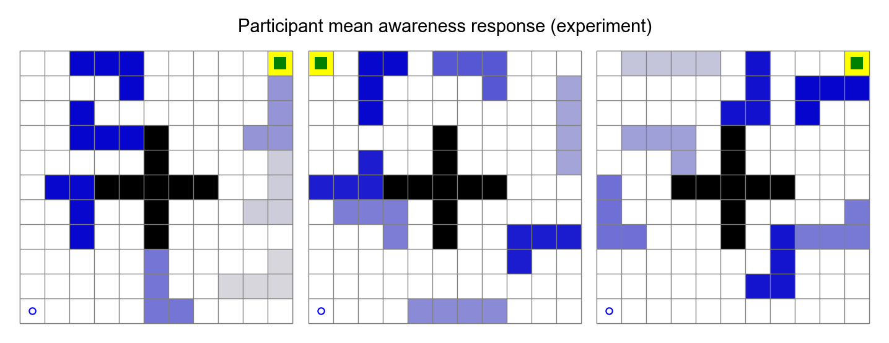
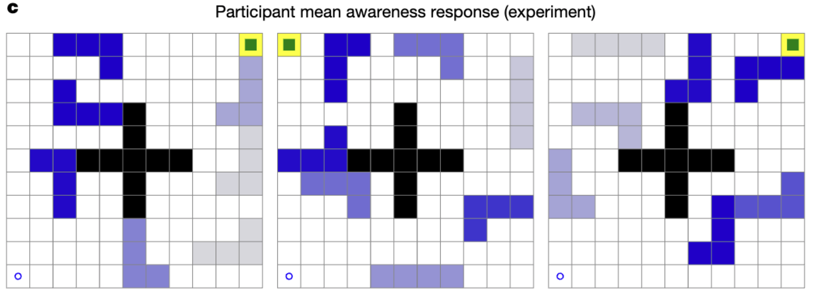

Replication of initial experiment from Mark Ho et al. (2022). People construct simplified mental representations to plan. Nature.
Introduction
I will replicate the results shown in Figure 3 of the paper People construct simplified mental representations to plan by Mark Ho et al. (2022).
In this paper, the authors propose task construal – a computational framework of planning that allows for constructing simplified task representations before planning, claiming that this capacity to control our mental representations better mirrors human behavior. Specifically, the authors derive a model of value-guided construal under the resource-rational perspective that an ideal, cognitively limited decision-maker should form value-guided construals that balance the complexity of a representation and its use for planning and acting. I am interested in understanding how we might construct and use flexible representations for mental simulation, so this work in the planning domain is highly relevant. In particular, their use of memory traces to probe whether an object was represented during planning is methodologically relevant to my work as I look for ways to explore the content of our mental representations in my research.
For this replication, I will recreate the initial experiment where the participants are first asked to navigate a maze composed of tetromino-shaped obstacles and then probed on their awareness of each obstacle after completing the navigation. Specifically, I will be reproducing the finding in Figure 3a, where they plot a histogram of the participants’ mean awareness of each obstacle, splitting on whether or not the value-guided construal model assigned less than or greater than 50% probability of including the obstacle in the construal.
Like the original authors, I will be using psiTurk and jsPsych (v.6.0.1) with Prolific. Rather than regenerating the scores from the computational models, I will use the same stimuli in the original paper. To generate the figures, I will directly compare the results with the model outputs from the original paper (i.e., I will not be recreating the model from scratch). The primary challenge will lie in recreating the behavioral experiment.
Link to repository
Link to paper
Link to behavioral experiment (doesn’t exist yet)
Methods
Power Analysis
Original effect size, power analysis for samples to achieve 80%, 90%, 95% power to detect that effect size. Considerations of feasibility for selecting planned sample size.
For the primary analysis, the authors performed a \(\chi^2\) test for independence between participants’ mean awareness responses of each obstacle in each maze and the model predictions. They reported \(\chi^2(1, N=84)=23.03\), \(p = 1.6 \times 10^{-6}\), effect size \(w = 0.52\).
Due to constraints on funding, the large effect size of \(0.52\), and the specifics of this analysis, we believe that a sample of \(n=100\) will suffice to detect the effect with sufficient confidence. This is because the \(\chi^2\) test is actually looking at a comparison of 84 obstacles across 12 mazes, where each of the 84 obstacles is given (1) a model likelihood prediction of whether or not participants will be aware of the obstacle, and (2) the average awareness rating (on an 8-point scale, normalized between 0 and 1) across all participants in the sample. So increasing the sample only increases our confidence in each obstacle’s awareness rating, however as shown in the pilot data these awareness ratings converge relatively quickly.
Planned Sample
In the original paper, the authors requested 200 participants on Prolific and wrote that a trial was excluded if any of the following occured during navigation:
- >5,000 ms was spent at the initial state
- >2,000 ms was spent at any non-initial state
- >20,000 ms was spent on the entire trial
- >1,500 ms was spent in the last three steps
Participants with <80% of trials after exclusions or who failed 2 of 3 comprehension questions were excluded, which resulted in n = 161 participants’ data being analysed. The authors reported the following demographics: median age of 28; 81 male, 75 female, 5 neither
In our replication, we will recruit 100 participants due to the considerations aformentioned.
Materials
Materials relevant to the study can be found here. The preregistration is here. The primary material needed is the set of 12 mazes. which is found here.
Procedure
Our initial experiment used a maze-navigation task in which the participants moved a circle from a starting location on a grid to a goal location using the arrow keys. The set of initial mazes consisted of twelve 11×11 mazes with seven blue tetronimo-shaped obstacles and centre walls arranged in a cross that blocked movement. On each trial, the participants were first shown a screen displaying only the centre walls. When they pressed the spacebar, the circle they controlled, the goal and the obstacles appeared, and they could begin moving immediately. Moreover, to ensure that the participants remained focused on moving, we placed a green square on the goal that shrank and would disappear after 1,000 ms but reset whenever an arrow key was pressed, except at the beginning of the trial when the green square took longer to shrink (5,000 ms). The participants received US$0.10 for reaching the goal without the green square disappearing (in addition to the base pay of US$0.98). The mazes were pseudorandomly rotated or flipped, so the start and end state was constantly changing, and the order of mazes was pseudorandomized. After completing each trial, the participants received awareness probes, which showed a static image of the maze they had just navigated, with one of the obstacles shown in light blue. The participants were asked “How aware of the highlighted obstacle were you at any point?” and could respond using an eight-point scale (which was rescaled to 0–1 for analyses). Probes were presented for the seven obstacles in a maze. None of the probes were associated with a bonus.
Analysis Plan
I aim to follow the following analysis plan:
- Collect data
- Preprocessing and apply exclusion criteria using this python script
- Generate \(\chi^2\) test and figure 3a using this jupyter notebook
The key analysis of interest is the \(\chi^2\) test for independence. The authors first split the obstacles across mazes on the basis of whether the value-guided construal model assigned a probability of less than or equal to 0.5 or greater than 0.5. Then after also splitting on the basis of whether mean awareness responses were less than or equal to 0.5 or greater than 0.5, they used a \(\chi^2\) test for independence and found that this awareness split was predicted by value-guided construal (\(\chi^2(1, N=84)=23.03\), \(p = 1.6 \times 10^{-6}\), effect size \(w = 0.52\)).
I also aim to reconstruct the plot from figure 3a, which is a histogram of participant mean awareness responses, splitting the data on whether value-guided construal assigned a probability of less than or equal to 0.5 or greater than 0.5.
Differences from Original Study
The study will be exactly the same, with the exception of a separate random sample of participants recruited on Prolific and a separate consent form.
Methods Addendum (Post Data Collection)
Actual Sample
We ended up recruiting a sample of 100 participants. After applying data exclusions from rules spelled out in the analysis plan, we ended up with a sample size of 88 participants.
Differences from pre-data collection methods plan
none.
Results
Data preparation
The original data preparation code is written in python here., and we will be reusing this code instead of writing it in the quarto document.
First, we call pull_data_from_server and parse_raw_datafiles fron pull_results.py:
import os
import urllib.request
import csv, json
import fire
import numpy as np
import pandas as pd
from vgc_project.gridutils import untransformations, untransformState, transformations
def pull_data_from_server(EXP_NAME, RAWRESULTS_DIR, CREDENTIALS_FILE):
"""Download data from the server"""
CREDENTIALS = json.load(open(CREDENTIALS_FILE, 'r'))
EXPURL = CREDENTIALS["EXPURL"]
USERNAME = CREDENTIALS["USERNAME"]
PASSWORD = CREDENTIALS["PASSWORD"]
sourcedest = [
(f"data/{EXP_NAME}/trialdata", RAWRESULTS_DIR+"rawtrialdata.csv"),
(f"data/{EXP_NAME}/questiondata", RAWRESULTS_DIR+"rawquestiondata.csv"),
(f"data/{EXP_NAME}/bonusdata", RAWRESULTS_DIR+"rawbonusdata.csv")
]
# stuff needed to open with authentication
print(f"pulling data for experiment '{EXP_NAME}'")
password_mgr = urllib.request.HTTPPasswordMgrWithDefaultRealm()
password_mgr.add_password(None, EXPURL, USERNAME, PASSWORD)
handler = urllib.request.HTTPBasicAuthHandler(password_mgr)
for SOURCE, DEST in sourcedest:
opener = urllib.request.build_opener(handler)
opener.open(EXPURL+SOURCE)
urllib.request.install_opener(opener)
urllib.request.urlretrieve(EXPURL+SOURCE, DEST)
#%%
def parse_raw_datafiles(
BASEGRIDS_FILENAME, RAWRESULTS_DIR,
EXP_CONFIG_FILE, EXP_RESULTS_DIR):
#%%
"""Parse downloaded datafiles"""
print("Parsing downloaded datafiles...")
basegrids = json.load(open(BASEGRIDS_FILENAME, 'r'))
trialdata = [line for line in csv.reader(open(RAWRESULTS_DIR+"rawtrialdata.csv", 'r'))]
questiondata = [line for line in csv.reader(open(RAWRESULTS_DIR+"rawquestiondata.csv", 'r'))]
bonusdata = [line for line in csv.reader(open(RAWRESULTS_DIR+"rawbonusdata.csv", 'r'))]
# jsPsych does not save questions
expConfig = json.load(open(EXP_CONFIG_FILE, 'r'))
cond0 = expConfig['timelines'][0]
excludewid = [
'5e14f5764f849eb011a0da:02my8yeqr7n6' #debugging
]
# %%
#parse question data
participantdata = {}
for row in questiondata:
wid, key, value = row
if "debug" in wid:
continue
if wid in excludewid:
continue
participantdata[wid] = participantdata.get(wid, {})
participantdata[wid][key] = value
# %%
# parse trial data
trainingtrials = []
navtrials = []
attntrials = []
startendtimes = {}
for t in trialdata:
wid, page, datetimeMS, record = t
if "debug" in wid or (wid in excludewid):
continue
startendtimes[wid] = startendtimes.get(wid, {'starttime': np.inf, "endtime": -np.inf})
startendtimes[wid]['starttime'] = min(startendtimes[wid]['starttime'], int(datetimeMS))
startendtimes[wid]["endtime"] = max(startendtimes[wid]["endtime"], int(datetimeMS))
record = json.loads(record)
record['wid'] = wid
if type(record.get('data', None)) == list:
essence = {k: v for k, v in record.items() if k != "data"}
for subrecord in record.get('data', None):
if subrecord.get('roundtype', None) == "navigation":
navtrials.append({**essence, **subrecord})
elif subrecord.get('roundtype', None) == "practice":
trainingtrials.append({**essence, **subrecord})
else:
print(subrecord)
if record.get('roundtype', None) == "navigation":
navtrials.append(record)
elif record.get('roundtype', None) == "practice":
trainingtrials.append(record)
elif record.get("trial_type", None) == "GridBlockAttentionQuery":
attntrials.append({**{k: v for k, v in record.items() if k != "data"}, **record.get('data', None)})
elif record.get("type", None) == "experiment_setup":
del record['bonusDollars']
participantdata[wid] = participantdata.get(wid, {})
participantdata[wid].update(record)
elif record.get('trial_type') in ["survey-multi-choice", "survey-text"]:
participantdata[wid] = participantdata.get(wid, {})
trialidx = record['trial_index'] - 1 #first is fullscreen
trialparams = cond0[trialidx]['questions']
record2 = {trialparams[int(qi[1:])]['name']: resp
for qi, resp in json.loads(record['responses']).items()}
participantdata[wid].update(record2)
elif record.get('trial_type') in ["survey-likert"]:
participantdata[wid] = participantdata.get(wid, {})
trialidx = record['trial_index'] - 1 #first is fullscreen
trialparams = cond0[trialidx]['questions']
record2 = {trialparams[int(qi[1:])]['name']: trialparams[int(qi[1:])]['labels'][resp]
for qi, resp in json.loads(record['responses']).items()}
participantdata[wid].update(record2)
elif record.get('trial_type') in ["GridNavigation", "GridMatching",
"CustomInstructions", "fullscreen",
"GridMatchConfidence", "GridBlockAttentionQuery"]:
continue
elif record.get('type') in ["instructions"]:
continue
else:
print(record)
for wid, rec in participantdata.items():
try:
rec.update(startendtimes[wid])
except KeyError:
continue
# %%
pt = pd.DataFrame(participantdata.values())
pt['wid'] = participantdata.keys()
tt = pd.DataFrame(trainingtrials)
nt = pd.DataFrame(navtrials)
at = pd.DataFrame(attntrials)
# %%
# participant trials
pt['totaltime'] = pt['endtime'] - pt['starttime']
# %% codecell
# set up navtrials
nt['grid'] = nt['gridname'].apply(lambda n: int(n.split("-")[1]))
nt['trans'] = nt['gridname'].apply(lambda n: n.split("-")[3])
nt['trialnum'] = nt['trialnum'].apply(int)
nt['round'] = nt['round'].apply(int)
nt['rt'] = nt['response_datetime'] - nt['start_datetime']
# ### recoding navigation trials
transformedGrids = {}
def recodeState(row):
t = row['trans']
ts = row['trans_state']
g = basegrids[f"grid-{row['grid']}-0"]
try:
tg = transformedGrids[(t, tuple(g))]
except KeyError:
tg = transformations[t](g)
transformedGrids[(t, tuple(g))] = tg
s = untransformState[t](tg, ts)
return [int(si) for si in tuple(np.rint(s))]
nt['trans_state'] = nt['state']
nt['state'] = nt.apply(recodeState, axis=1)
# %%
# attention trials
attn_resp_recode = {
'1': -4, '2': -3, '3': -2,
'4': -1, '5': 1,
'6': 2, '7': 3, '8': 4
}
at['grid'] = at['navgridname'].apply(lambda n: int(n.split('-')[1]))
at['trans'] = at['navgridname'].apply(lambda n: n.split('-')[3])
at['attention'] = at['response'].apply(lambda r: attn_resp_recode[str(r).strip()])
at['rt'] = at['responsetime'] - at['starttime']
at['logrt'] = np.log(at['rt'])
mapping = nt.set_index('wid')['sessionId'].to_dict()
pt['sessionId'] = pt['wid'].map(mapping)
# %%
# Check if the directory exists, and create it if it does not
if not os.path.exists(EXP_RESULTS_DIR):
os.makedirs(EXP_RESULTS_DIR)
# save
pt[['wid', 'bonusDollars']].to_json(EXP_RESULTS_DIR+"all-bonuses.json")
pt = pt.drop('wid', axis=1)
pt.to_json(EXP_RESULTS_DIR+"all-participantdata.json")
tt = tt.drop('wid', axis=1)
tt.to_json(EXP_RESULTS_DIR+"all-trainingtrials.json")
nt = nt.drop('wid', axis=1)
nt.to_json(EXP_RESULTS_DIR+"all-navtrials.json")
at = at.drop('wid', axis=1)
at.to_json(EXP_RESULTS_DIR+"all-attentiontrials.json")
print(f"Total participants: {len(pt)}")
#%%
if __name__ == "__main__":
fire.Fire()Then, we run prep_results.py:
#
# Prepare results for analysis
#
import pandas as pd
import numpy as np
from collections import defaultdict
import fire
import json
NUM_ROUNDS = 12
# Exclusion criteria
COMPREHENSION_CHECK_CUTOFF = 2
TOTAL_NAV_TIME_CUTOFF_MS = 20000
LAST3STEPS_RT_CUTOFF_MS = 1500
INIT_STEP_RT_CUTOFF_MS = 5000
NON_INITIAL_RT_CUTOFF_MS = 2000
VALID_ROUNDS_CUTOFF_PROP = .8
def do_exclusions(RESULTSDIR, BASEGRIDS_FILENAME):
"""Apply exclusion criteria to results files"""
# load data
pt = pd.read_json(open(RESULTSDIR+"all-participantdata.json", 'r'))
nt = pd.read_json(open(RESULTSDIR+"all-navtrials.json", 'r'))
at = pd.read_json(open(RESULTSDIR+"all-attentiontrials.json", 'r'))
n_grid_probes = len(at[['grid', 'probeobs']].drop_duplicates())
at = at[at['sessionId'].isin(pt.sessionId)]
nt = nt[nt['sessionId'].isin(pt.sessionId)]
notMissingTrials = at.groupby("sessionId")['block'].count() >= VALID_ROUNDS_CUTOFF_PROP*n_grid_probes
sidKeep = notMissingTrials.index[notMissingTrials]
at = at[at['sessionId'].isin(sidKeep)]
nt = nt[nt['sessionId'].isin(sidKeep)]
pt = pt[pt['sessionId'].isin(sidKeep)]
print(f"{len(sidKeep)} of {len(notMissingTrials)} with >{VALID_ROUNDS_CUTOFF_PROP*n_grid_probes} recorded trials")
print("Performing Exclusions")
response_stats = defaultdict(lambda: list)
# Comprehension checks
def failed_comp_check(r):
return ((r['navCheck'] == 'True') +
(r['navBonusCheck'] == '10 cents') +
(r['memoryBonusCheck'] == 'None')) < COMPREHENSION_CHECK_CUTOFF
failed_comp = pt.apply(failed_comp_check, axis=1)
passed_comp = pt[~failed_comp]['sessionId']
pt = pt[pt['sessionId'].isin(passed_comp)]
at = at[at['sessionId'].isin(passed_comp)]
nt = nt[nt['sessionId'].isin(passed_comp)]
print(f"{len(passed_comp)} of {len(failed_comp)} passed {COMPREHENSION_CHECK_CUTOFF} of 3 comprehension checks")
# Response Time and Round Exclusions
def calc_by_round_exclusion_criteria(ts):
ts = ts.sort_values('trialnum')
straj = [tuple(s) for s in ts.sort_values('trialnum')['state']]
tnums = ts['trialnum']
non_consec_trials = \
[(i + 1) != ii for i, ii in zip(tnums[:], tnums[1:])]
total_nav_time = \
ts['response_datetime'].max() - ts['start_datetime'].min()
last_3_steps_rt = ts.sort_values('trialnum').iloc[-3:]['rt'].sum()
init_step_time = ts[ts['trialnum'] == 0]['rt'].max()
non_initial_step_rt = ts[ts['trialnum'] != 0]['rt'].max()
return pd.Series({
'non_consec_trials': sum(non_consec_trials) > 0,
'multiple_first_trials':\
(ts['trialnum'] == 0).sum() > 1,
'high_total_nav_time':\
total_nav_time > TOTAL_NAV_TIME_CUTOFF_MS,
'high_last_3_steps_rt':\
last_3_steps_rt > LAST3STEPS_RT_CUTOFF_MS,
'high_initial_step_time':\
init_step_time > INIT_STEP_RT_CUTOFF_MS,
'high_non_initial_step_rt': \
non_initial_step_rt > NON_INITIAL_RT_CUTOFF_MS
})
round_exclusions = nt.groupby(["grid", "sessionId", "round"]).\
apply(calc_by_round_exclusion_criteria)
round_exclusions['any_exclusion'] = round_exclusions.apply(any, axis=1)
for col in round_exclusions.columns:
print('\t'.join([col+": ", f"{round_exclusions[col].sum()} of {len(round_exclusions)}"]))
rounds_to_keep =\
round_exclusions[~round_exclusions['any_exclusion']].\
reset_index()[['grid', 'sessionId', 'round']]
at = at.merge(rounds_to_keep)
nt = nt.merge(rounds_to_keep)
# Exclusion based on valid rounds
enoughTrials = at.groupby('sessionId')['attention'].count() >= VALID_ROUNDS_CUTOFF_PROP*n_grid_probes
sidKeep = enoughTrials.index[enoughTrials]
print(f"Participants with {VALID_ROUNDS_CUTOFF_PROP*n_grid_probes} of {n_grid_probes} valid response trials: {len(sidKeep)} of {len(pt)}")
at = at[at['sessionId'].isin(sidKeep)]
nt = nt[nt['sessionId'].isin(sidKeep)]
pt = pt[pt['sessionId'].isin(sidKeep)]
# save
print(f"Total remaining participants: {len(pt)}")
print(f"Total remaining rounds: {len(at.groupby(['sessionId', 'grid']))}")
print(f"Total remaining responses: {len(at)}")
pt.to_json(RESULTSDIR+"participantdata.json")
at.to_json(RESULTSDIR+"attentiontrials.json")
nt.to_json(RESULTSDIR+"navtrials.json")
if __name__ == '__main__':
fire.Fire()Third, we run prep_data.py:
import pandas as pd
import numpy as np
import seaborn as sns
from vgc_project import utils, gridutils
from msdm.domains import GridWorld
from vgc_project.modelinterface import create_modeling_interface
import json
from functools import lru_cache
from itertools import combinations, product
import warnings
from tqdm import tqdm
sem = lambda c: np.std(c)/np.sqrt(np.sum(c != np.nan))
import matplotlib.pyplot as plt
import sys
import logging
logger = logging.getLogger()
logging.basicConfig(stream=sys.stdout)
logger.setLevel(logging.WARNING)
import os
DATA_DIRECTORY = "../experiments"
# ========= #
# Utilities #
# ========= #
@lru_cache()
def make_gridworld(tile_array):
gw = GridWorld(
tile_array,
initial_features="S",
absorbing_features="G",
wall_features="#0123456789",
step_cost=-1
)
def plot(*args, **kwargs):
kwargs = {
"featurecolors": {
"#": 'k',
"G": "green",
**{k: 'mediumblue' for k in "0123456789"}
},
"plot_walls": False,
**kwargs
}
return GridWorld.plot(gw, *args, **kwargs)
gw.plot = plot
return gw
def calc_nav_mindist(navtrial):
flocs = make_gridworld(mazes[navtrial['grid']]).feature_locations
dists = {}
for obs, locs in flocs.items():
if obs not in "0123456789":
continue
locs = [(l['x'], l['y']) for l in locs]
dist = gridutils.min_dist(navtrial['state_traj'], locs)
dists[f"obs-{obs}"] = dist['mindist']
return pd.Series(dists)
def calc_nav_mindist_timestep(navtrial):
flocs = make_gridworld(mazes[navtrial['grid']]).feature_locations
steps = {}
for obs, locs in flocs.items():
if obs not in "0123456789":
continue
locs = [(l['x'], l['y']) for l in locs]
dist = gridutils.min_dist(navtrial['state_traj'], locs, sourcename='traj')
mindist_loc = (dist['mintrajloc.x'], dist['mintrajloc.y'])
mindist_step = max(i for i, loc in enumerate(navtrial['state_traj']) if tuple(loc) == mindist_loc)
steps[f"obs-{obs}"] = mindist_step
return pd.Series(steps)
# ================= #
# Model Predictions #
# ================= #
mazes_0_11 = json.load(open(os.path.join(DATA_DIRECTORY, "mazes/mazes_0-11.json"), 'r'))
mazes_12_15 = json.load(open(os.path.join(DATA_DIRECTORY, "mazes/mazes_12-15.json"), 'r'))
mazes = {
**{"-".join(k.split('-')[:-1]): tuple(v) for k,v in mazes_0_11.items()},
**{k: tuple(v) for k,v in mazes_12_15.items()}
}
mods = create_modeling_interface(joblib_cache_location="./_analysiscache")
model_preds = []
for grid, tile_array in mazes.items():
for obs in sorted(set("0123456789") & set.union(*[set(r) for r in tile_array])):
preds = {
"grid": grid,
"obstacle": f"obs-{obs}",
**mods.predictions(tile_array, obs, seed=72193880),
}
model_preds.append(preds)
model_preds = pd.DataFrame(model_preds)
to_zscore = [
# 'vgc_weight',
'static_vgc_weight',
'dynamic_vgc_weight',
'log_traj_based_hitcount',
'graph_based_hitcount',
'goal_dist',
'start_dist',
'optpolicy_dist',
'walls_dist',
'center_dist',
'bottleneck_dist',
'sr_occ'
]
for col in to_zscore:
model_preds[col+"_Z"] = utils.zscore(model_preds[col])
# ================= #
# Experiment 1 Data #
# ================= #
@lru_cache()
def get_exp1_nt():
def parse_exp1_navtrial(t):
t = t.sort_values('trialnum')
return pd.Series({
'state_traj': list(t['state']),
'initial_rt': t['rt'].iloc[0],
'total_rt': t['rt'].sum()
})
exp1_nt = pd.DataFrame(json.load(open(os.path.join(DATA_DIRECTORY, "exp1/data/navtrials.json"), 'r')))
exp1_nt = exp1_nt.groupby(['sessionId', 'round', 'grid', 'trans'])\
.apply(parse_exp1_navtrial).reset_index()
exp1_nt['grid'] = exp1_nt['grid'].apply(lambda gi: f"grid-{gi}")
return exp1_nt
@lru_cache()
def get_exp1_navdist():
exp1_nt = get_exp1_nt()
exp1_navdist = pd.concat([
exp1_nt[['sessionId', 'round', 'grid']],
exp1_nt.apply(calc_nav_mindist, axis=1)
], axis=1).melt(id_vars=['sessionId', 'round', 'grid'], var_name="obstacle", value_name="nav_mindist")
return exp1_navdist
@lru_cache()
def get_exp1_navdist_timestep():
exp1_nt = get_exp1_nt()
exp1_navdist_timestep = pd.concat([
exp1_nt[['sessionId', 'round', 'grid']],
exp1_nt.apply(calc_nav_mindist_timestep, axis=1)
], axis=1).melt(id_vars=['sessionId', 'round', 'grid'], var_name="obstacle", value_name="nav_mindist_timestep")
return exp1_navdist_timestep
@lru_cache()
def get_exp1_at():
print("Loading Experiment 1 Attention Trials")
exp1_at = pd.DataFrame(json.load(open(os.path.join(DATA_DIRECTORY, "exp1/data/attentiontrials.json"), 'r')))
exp1_at = exp1_at[['sessionId', 'round', 'grid', 'trans', 'probeobs', 'queryround', 'attention', 'rt']]\
.rename(columns={"probeobs": "obstacle", "queryround": "proberound"})
exp1_at['grid'] = exp1_at['grid'].apply(lambda gi: f"grid-{gi}")
exp1_at['obstacle'] = exp1_at['obstacle'].apply(lambda oi: f"obs-{oi}")
exp1_at['attention_N'] = utils.normalize(exp1_at['attention'], minval=-4, maxval=4)
exp1_navdist = get_exp1_navdist()
exp1_navdist_timestep = get_exp1_navdist_timestep()
exp1_at = exp1_at.\
merge(exp1_navdist, on=['sessionId', 'round', 'grid', 'obstacle']).\
merge(exp1_navdist_timestep, on=['sessionId', 'round', 'grid', 'obstacle'])
exp1_at['nav_mindist_Z'] = utils.zscore(exp1_at['nav_mindist'])
exp1_at['nav_mindist_timestep_Z'] = utils.zscore(exp1_at['nav_mindist_timestep'])
exp1_at = exp1_at.merge(model_preds)
#check that each column of data is unique
for c1, c2 in product(exp1_at.columns, repeat=2):
if c1 != c2:
assert not all(exp1_at[c1] == exp1_at[c2])
return exp1_atConfirmatory analysis
The analysis code can be found here.
\(\chi^2\) test for independence:
from itertools import product
import json
import matplotlib.pyplot as plt
from matplotlib.colors import to_rgb
from matplotlib.patches import Rectangle, Arrow, Circle
import matplotlib
matplotlib.rcParams['pdf.fonttype'] = 42
import numpy as np
import seaborn as sns
import pandas as pd
from scipy import stats
from vgc_project.r import create_R_model_interface, ImmutableDataFrame
from vgc_project.parameter_fit import create_fit_vgc_model_to_trials, Trial
joblib_cache_location = "./_analysiscache"
rmods = create_R_model_interface(joblib_cache_location=joblib_cache_location)
fit_vgc_model_to_trials = create_fit_vgc_model_to_trials(joblib_cache_location=joblib_cache_location)
import analysisutils
from analysisutils import predictor_names, short_predictor_names
from prep_data import \
mazes,\
model_preds,\
get_exp1_at
exp1_at = get_exp1_at("exp1/data/pilot_b/")
exp1_means = exp1_at.groupby(['grid', 'obstacle'])[["attention_N", "static_vgc_weight"]].mean().reset_index()
exp1_contab = pd.crosstab(exp1_means["attention_N"] >= .5, exp1_means["static_vgc_weight"] >= .5)
chi2, pval, dof, exp = stats.chi2_contingency(exp1_contab, correction=False)
chi2_effectsize_w = np.sqrt(chi2/len(exp1_means))
pval = analysisutils.pval_to_string(pval)
exp1_chi2_res = f"$\chi^2({dof}, N={len(exp1_means)})={chi2:.2f}$, $p {pval}$, effect size $w = {chi2_effectsize_w:.2f}$"
print(exp1_chi2_res)Output (replication):
$\chi^2(1, N=84)=23.02$, $p = 1.6 \times 10^{-6}$, effect size $w = 0.52$Output (Original):
$\chi^2(1, N=84)=23.03$, $p = 1.6\times 10^{-6}$, effect size $w = 0.52$Exploratory analyses
Initial experiment mean awareness histogram (Fig. 3a from paper):
expmod_means = exp1_at.groupby(['grid', 'obstacle'])[['attention_N', "static_vgc_weight"]].\
mean().reset_index()
# create figure
fig_width_mm = 50
fig_height_mm = 50
mm_to_inch = 1/25.4
assert fig_width_mm <= 182
assert fig_height_mm <= 245
import matplotlib.gridspec as gridspec
fig, ax = plt.subplots(
1, 1,
figsize=(fig_width_mm*mm_to_inch, fig_height_mm*mm_to_inch),
dpi=300
)
for spine in ['top','bottom','left','right']:
ax.spines[spine].set_linewidth(.5)
bins = np.linspace(0, 1, 10)
sns.histplot(
expmod_means[expmod_means['static_vgc_weight'] >= .5]['attention_N'],
ax=ax, kde=False, bins=bins, color='mediumblue', linewidth=.5
)
sns.histplot(
expmod_means[expmod_means['static_vgc_weight'] < .5]['attention_N'],
ax=ax, kde=False, bins=bins, color='gainsboro', linewidth=.5
)
for _, row in expmod_means.iterrows():
ax.plot(
# [row['attention_N'], row['attention_N']], [-2, -.1],
[row['attention_N'], ], [-1+(.5 - np.random.random())*.8],
marker='.',
alpha=.5,
markersize=6,
# markercolor='mediumblue' if row['vgc_weight'] >= .5 else 'gainsboro'
color='mediumblue' if row['static_vgc_weight'] >= .5 else 'gainsboro',
markeredgewidth=.25,
markeredgecolor='k'
)
ax.tick_params(axis='both', width=.5)
ax.set(**dict(
xticks=[0, .25, .5, .75, 1],
xlim=(0, 1),
ylim=(-2, 15),
yticks=[0, 5, 10, 15],
))
ax.set_xlabel('Initial Experiment Mean Awareness', fontsize=7, fontfamily = "Arial")
ax.set_ylabel('Count', fontsize=7, fontfamily = "Arial")
plt.yticks(fontname = "Arial", fontsize=7)
plt.xticks(fontname = "Arial", fontsize=7)
# fig.savefig("results/exp1_hist_svgc.pdf")
# fig.set_dpi(150)Output (Replication): 
Output (Original): 
Output (Model prediction): 
Output (Replication): 
Output (Original): 
Discussion
Summary of Replication Attempt
Our primary result was a \(\chi^2\) test for independence. Specifically, the authors split the set of 84 obstacles across mazes on the basis of whether the value-guided construal model assigned a probability of less than or equal to 0.5 or greater than 0.5. They then similarly split the obstacles on the basis of whether mean awareness responses were less than or equal to 0.5 or greater than 0.5, and with the \(\chi^2\) test for independence found that this split was predicted by value-guided construal \(\chi^2(1, N=84)=23.02\), \(p = 1.6 \times 10^{-6}\), effect size \(w = 0.52\). Thus, we see that the result closely replicated the original paper, suggesting that people’s responses align well with how an ideal, cognitively limited decision-maker should form value-guided construals that balance the complexity of a representation and its use for planning and acting.
Commentary
In addition to our primary result, we find found that our results also closely matched the rest of the figures in figure 3 of the original paper.